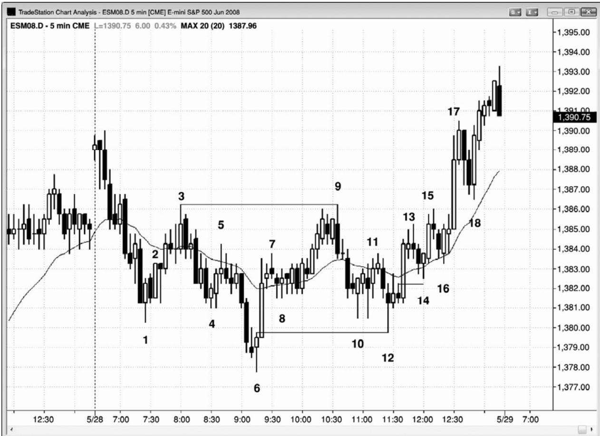
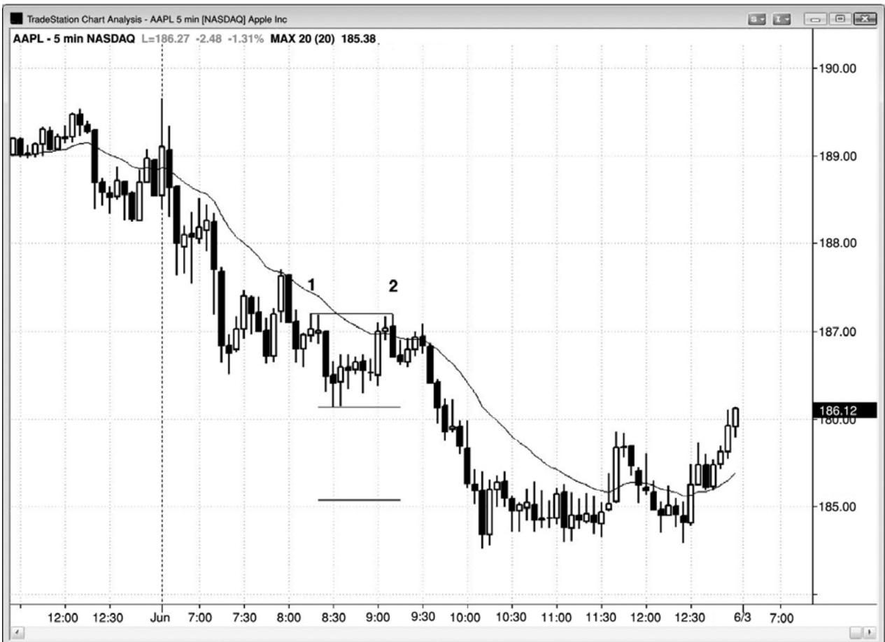
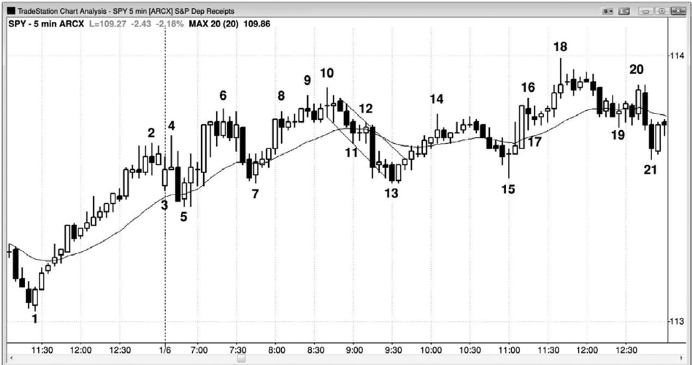

第16章 趋势和交易区间的腿形计数¶
第 16 章 趋势和交易区间的腿形计数
趋势常常拥有两条腿。如果反转后第一条腿的动能很强，那么多空双方都会怀疑它是否会是很多腿中的第一条腿，形成一轮新趋势。因此，多空双方都预期市场对原来趋势极点的测试将失败，顺势（顺着原来趋势）交易者们将快速离场。举例说明，如果在一轮延长的空头趋势之后出现一波很强的上涨运动，这波上涨运动超越均线和空头趋势的最后一个更低高点，而且包含很多多头趋势棒，那么多空双方将假定市场会测试保持在空头低点上方的那个低点。一旦这第一条上涨腿的动能消退，多头将部分或全部获利，空头将会做空，以防空方有能力继续控制市场。空方不确定他们的趋势是否已经结束，他们愿意建立新的空头头寸。市场将会下跌，因为在出现更为看涨的价格行为之前，买家不愿意买进。当多头在测试低点的回撤返回时，新的空头将快速离场，因为他们不希望在那笔交易上亏损。空头回补空头头寸的买进将增加向上的压力。然后，市场将形成一个更高的低点。空头不会考虑两次做空，除非这条腿在第一条上涨腿的顶部附近徘徊不前（一个可能的双重顶空头旗形）。如果那样的话，新的多头将会迅速离场，因为他们不想亏损，空头将变得更加积极，因为他们感觉到这第二条腿已经失败。最后，一方将会胜出。在所有市场中，这种类型的交易整天都在进行，产生大量的两条腿运动。
实际上，在市场向一个方向做了任意幅度的运动后，它最后会努力反转那一波运动，在反转处常常会做两次尝试。也就是说每一轮趋势和每一波逆势运动都很可能再细分为两条腿，而每条腿很可能被细分为两条更小的腿。
当你在寻找一波两条腿运动，但是看到两条腿处于一条任意类型的的相对紧凑的通道（比如楔形）内时，那么它们实际上是第一条腿的子腿，通道可能实际上只是两条腿的第一条腿。如果与正在调整的形态相比，两条腿中每一条腿内的棒数不足时，这尤其正确。举例说明，如果出现一个持续了两小时的楔形顶，然后是一个三棒空头尖峰，然后是一条三棒通道，那么那个尖峰和通道加在一起很可能只是第一条下跌腿，在至少再形成一条下跌腿之前，交易者们在重仓买进时会犹豫不决。

图16.1中，截止棒6的空头趋势包含两条腿，第二条腿可以细分为两条较小的腿。截止棒9的上涨运动也包含两条腿，截止棒12的下跌运动也包含两条腿。根据定义，所有尖峰和通道形态都是两条腿运动，因为存在一个动能较高的尖峰期和一个动能较低的通道期。
棒 12 是对多头运动起点的完美的突破测试。它的低点刚好与棒 6 信号棒高点位于同一价位，准确地猎杀了棒6多头交易的盈亏平衡止损。每当出现一个完美或近似完美的突破测试，市场将形成一波近似测试运动的几率就很高（预期从棒12低点开始的上涨运动等于从棒6到棒 9 的运动的点数）。
有一波截止棒 15 的两条腿运动，但是当它的高点被超越时，空头不得不买回从离开棒15 做空架构的失败低点 2 入场的头寸，市场在一个多头尖峰中快速上攻。棒 9 已经与棒 3 形成一个双重顶空头旗形，它在从棒 16 开始的反弹中失败，这也要归功于那个多头突破。
图 16.2 双重顶空头旗形

P141
如图 16.2，苹果（AAPL）在 5 分钟图是一只循规蹈矩的股票。在棒 2，它形成一个双重顶空头旗形（棒2高点比棒1高点低了1美分），下跌运动超出了交易区间两倍高度的近似目标。棒 2 也是空头趋势中向均线的两条腿上涨运动的顶部，在均线处形成一个空头低点 2 架构，那是趋势中的一个可靠入场。很多股票中的趋势对均线是非常尊重的，也就是说均线在一天中都在提供在趋势方向上以有限风险入场的机会。棒 2 后面的 4 棒形成一个双重顶回撤做空架构。
图 16.3 楔形顶

在图 16.3 中，SPY 形成一个楔形顶，由棒 4、6 和 10 构成，之后通常是两条腿横盘至下跌调整。出现一个结束于棒 11 的的三棒空头腿形，第二条下跌腿结束于棒 13。这一波运动是在一条通道之内，只是较高时间框架图表上的一条腿。它的幅度接近从棒 7 到棒 10 的上涨腿，所以大部分交易者认为它所包含的棒线数量可能还不足以调整之前的大型楔形。市场形成第二条横盘调整腿，至棒 15 结束，略高于棒 13 低点，形成一个双重底，接下来出现一波多头尖峰和通道上涨，到达新的趋势高点。